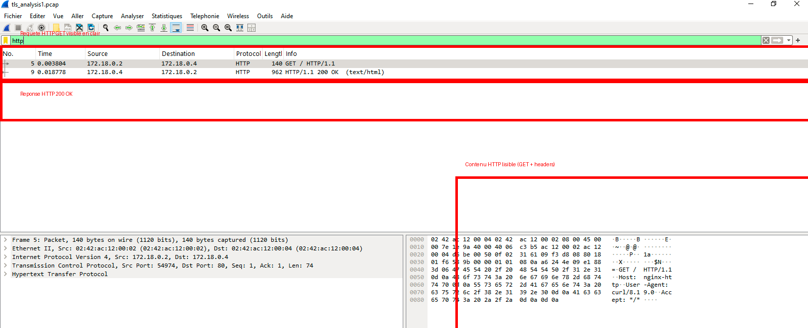
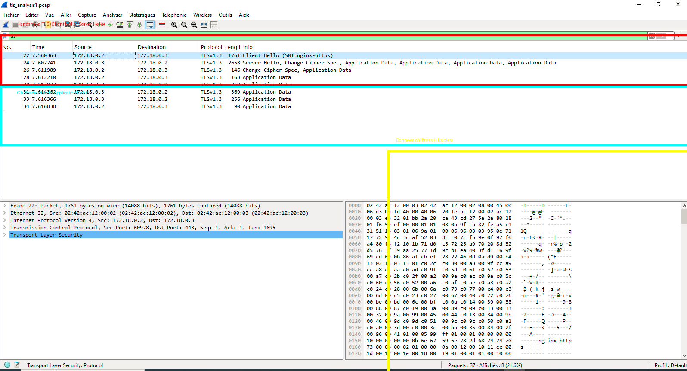
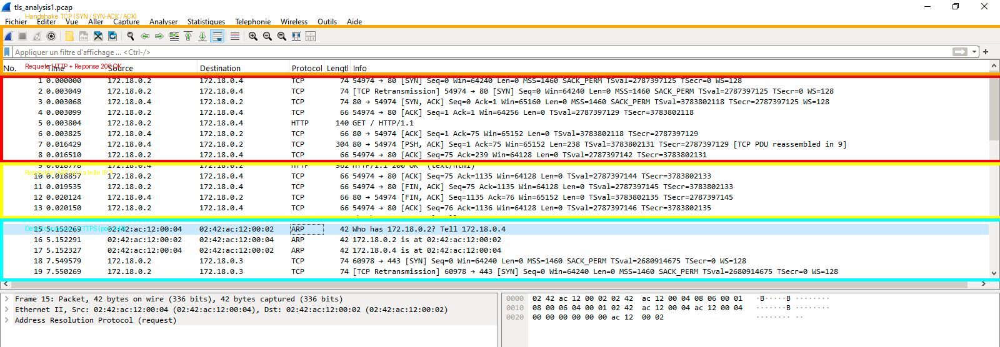

HTTP
Observation d’une requête GET visible en clair dans Wireshark.
HTTPS / TLS
Analyse du handshake TLS et des données chiffrées.
Docker Lab
Infrastructure reproductible avec Nginx HTTP, Nginx HTTPS et client d’analyse.
Captures Wireshark

Trafic HTTP
La requête GET et les headers HTTP sont visibles en clair.

Trafic HTTPS / TLS
Le handshake TLS est visible, mais les données applicatives sont chiffrées.

Vue complète
Observation des couches réseau : TCP, HTTP, ARP et début de connexion HTTPS.
Comparaison HTTP vs HTTPS
| Élément | HTTP | HTTPS |
|---|---|---|
| Données lisibles | Oui | Non |
| GET visible | Oui | Non |
| Chiffrement | Non | Oui |
| TLS Handshake | Non | Oui |